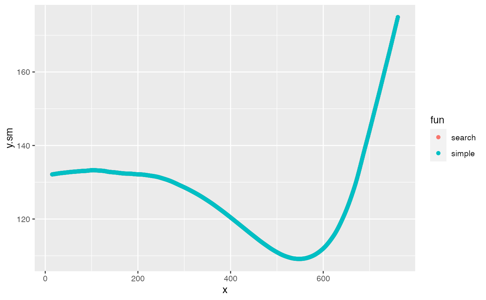
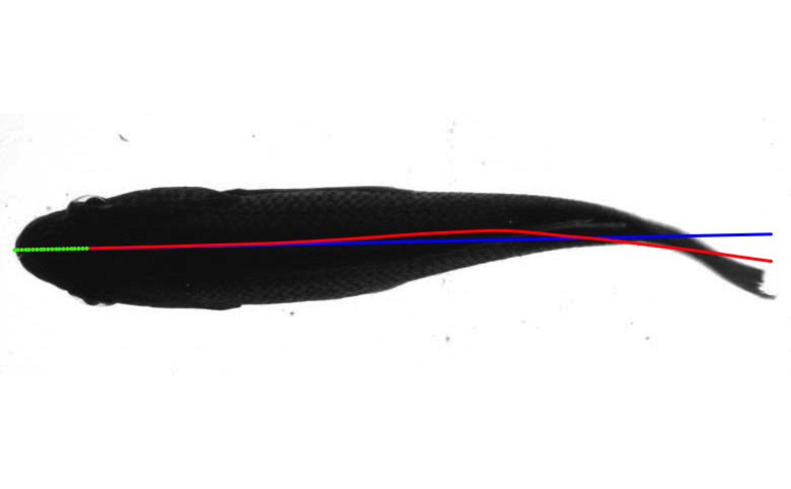

kin.search.RdWrapper functions for find.roi that automatically retrieve the contour and midline coordinates of a detected ROI in each image of a sequence through thresholding and segmentation. Also outputs the midline amplitude relative to a reference line determined by an anterior section of the ROI. Supported image formats are jpeg, png, and tiff.
kin.search and kin.simple find the y-value midpoint along the x-value array of the ROI and fits a midline according to a chosen smoothing method (loess or spline). Thus, these assume a horizontal position (see Details).
kin.search and kin.free include arguments for flexible ROI selection.
kin.simple is itself a wrapper for kin.search, finding the largest ROI in field using Otsu thresholding for segmentation.
kin.free does not assume any particular orientation and is intended for finding ROIs freely moving within the image field. This function estimates midlines by various methods and supports parallel processing of frames (see Details).
kin.search( image.dir = NULL, frames = NULL, ant.per = 0.1, tips = 0.02, smooth.n = 0, ml.meth = "hull", ml.smooth = list("loess", 0.25), save = FALSE, plot.pml = TRUE, out.qual = 1, out.dir = NULL, ... ) kin.simple( image.dir = NULL, frames = NULL, ant.per = 0.2, tips = 0.02, smooth.n = 0, ml.meth = "hull", ml.smooth = list("loess", 0.25), save = FALSE, plot.pml = TRUE, out.qual = 1, out.dir = NULL ) kin.free( image.dir = NULL, frames = NULL, par = FALSE, cores.n = NULL, ant.per = 0.1, ant.pos = NULL, tips = 0.02, smooth.n = 1, red = NULL, ml.meth = "hull", ml.smooth = list("spline", 0.25), save = FALSE, out.qual = 1, out.dir = NULL, plot.pml = TRUE, ... )
| image.dir | character, directory containing images to analyze. |
|---|---|
| frames | numeric, vector indicating which images to process. NULL, the default, will result in all images in |
| ant.per | numeric; left-most percentage of ROI that establishes the horizontal reference for the midline displacement. |
| tips, | numeric, the proportion the the midline data to use in calculation of the head and tail position. |
| smooth.n, | numeric, the number of contour smoothing iterations. See Details. |
| ml.meth | character, the midline detection method. One of 'ang' for bisection using |
| ml.smooth | a list of length two with unnamed components including a character string specifying the midline smoothing method, either 'loess' or "spline", and a numeric value specifying the amount of smoothing. See Details. |
| save | logical, value indicating if images should be outputted with midline and predicted midline based on the |
| plot.pml | logical, value indicating if outputted images should include an overlay of the theoretical midline based on |
| out.qual, | numeric, a value between 0-1 representing the quality of outputted images. Ignored if |
| out.dir | character, the directory to which outputted images should be saved. |
| ..., | other parameters passed to |
| par | logical, should the frames be processed in parallel using |
| cores.n | numeric, the number of CPU cores to use if |
| ant.pos | character, one of NULL, "l","r","u",or "d" to specify the position of the anterior of the ROI. If not NULL, the default algorithm to find the anterior is overridden. See Details. |
| red | numeric, between 0-1 the proportion of contour coordinates to sample for midline estimates. Ignored if |
A list with the following components:
kin.dat a data table consisting of frame-by-frame position parameters for the ROI determined by search.for.
the frame number
'roi': a character indicating the ROI ranked by size ('a' being the largest)
'x' and ''y': the position of the tail (rightmost or posteriormost)
'head.x' and 'head.y': the x and y position of the head (leftmost or anteriormost)
'amp': the amplitude (amp) of the tail relative to thr theoretical midline determined by the lm() predictions from ant.per
'head.pval': p values of the lm() fit that describes the position of the head as determined by ant.per (green points in the outputted images/video)
midline A data table containing, for each frame described by frames, the following:
the frame number
'roi': a character indicating ROI size ('a' being the largest)
'n': the index of the points where n=1 is headmost
'x' and 'y': unsmoothed x and y positions of the midline of the ROI
'x.sm' and 'y.sm': midline points fit to a smooth spline or loess model with spar or span equal to smooth (red curve in the outputted images/video)
'wave.y': midline points 'y.pred' relative to 'mid.pred'
'per.bl': the percentage of 'x.sm' along the body length calculated as the cumulative sum of distances between points
cont A data table containing x and y positions of the contours used to calculate the data in 'kin.dat'. Contains the following:
'frame': the frame
'x' and 'y': the x and y positions of the contours
cont.sm A data table containing the smoothed x and y positions of the contours used to calculate the data in 'kin.dat'. Contains the following:
'frame': the frame
'n': the position of the coordinate. n=1 and n=max(n) are adjacent at the head
'x' and 'y': the x and y positions of the contours
all.classes A data table containing the following for all ROIs detected:
'frame': the frame
'roi': the name of each ROI found in a frame.
'edge': indicating whether ROI was on the edge of the image field
'size': size of the ROI in pixels^2
'offset.x': ROI distance from horizontal center
'offset.y': ROI distance from vertical center
'offset': linear distance of ROI's centroid to image center
mid.pred the theoretical midline based on a linear model established by the anterior section of the smoothed midline established by ant.per. Used to calculate midline$wave.y as the orthogonal distance between the line defined by 'x' and 'mid.pred' and each coordinate defined by 'midline$x.sm and midline$y.sm. A data table that contains the following:
'frame': the frame
'x': x position of the predicted midline
'mid.pred': the y position of the predicted midline
dim the x and y dimensions of the images analyzed
The algorithms in kin.simple and kin.search assume a left-right horizontal orientation, i.e., the head of the ROI is positioned left, the tail right. If this is not the case, consider using kin.free or rotating images before processing. The ant.per value therefor establishes the reference line (theoretical straight midline) based on that portion of the head. The midline is calculated as the midpoints between the y extrema for each x position.
kin.search and kin.free choose ROIs based on relative ROI size or position according to find.roi. Parameters for this function are passed through additional arguments with .... Thresholding operations can be performed with an arbitrary (user defined) numeric value or with Otsu's method ('thr="otsu"'). The latter chooses a threshold value by minimizing the combined intra-class variance. See otsu.
kin.simple is more streamlined than kin.search. It attempts to find the largest ROI using Otsu thresholding and invokes other default values of find.roi.
With kin.free, the position of the anterior of the ROI (that which is moving forward in the field) is determined by the displacement of the ROI between the first two frames. Thus, frames must be >1. For analyses of relatively static ROIs in the field (e.g., steadily swimming animals in flumes, etc.), automatically determining the anterior of the ROI may be spurious. In this case, the default automatic determination of the anterior should be overridden by specifying 'l', 'r', 'u', 'd' with ant.pos. These values specify that the anterior region of the ROI is leftmost, rightmost, upmost, or downmost in the field, respectively, and assumes that the origin of the field (0,0) is the upper left corner of each frame.
Midline estimation in kin.free is pursued by one of three algorithms: bisection of contours across the long axis defined by the tips using free.ml.ang or free.ml.hull or by Delaunay triangulation using free.ml.del. The default is 'hull' This choice is not arbitrary. The use of free.ml.ang and free.ml.hull can be faster, but perform poorly for tips that snake back on themselves (i.e., a high degree curvature). The use of free.ml.del can be slower for high resolution outlines, but produces better results when contour regions overlap (i.e, those that snake back on themselves), but produces less precise midlines for complicated contours. Using Delaunay triangulation can be hastened (but possibly with a trade off in precision) by reducing the the complexity of the contour with the 'red' argument. For example, a contour of 1000 coordinates would be reduced to one of 500 with 'red=0.5'.
For midline smoothing, if ml.smooth contains 'spline', smooth_spline from the smoothr package is used to interpolate points between a reduced number of vertices using piecewise cubic polynomials. The number of vertices is calculated based on the number of midline coordinates times numeric value of the list in ml.smooth. If ml.smooth contains 'loess', loess is used to fit a polynomial surface. For contours that have a complicated midline with non-unique x values, say an orginisms swimming vertically in the file, loess smoothing can produce poor results. Thus, spline smoothing is usually the advisable option.
For contour smoothing before midline estimate in kin.free, smooth.n is passed to the smooth.n parameter of free.ml.ang, free.ml.hull, or free.ml.del, which smooths coordinates using a simple moving average. Contours are similarly smoothed in kin.search and kin.simple by invoking coo_smooth from the Momocs package. Users should be wary of oversmoothing by smoothing both the contour (from which the midline is calculated) and the midline.
kin.free, find.roi
#### plot caudal amplitude and produce a classic midline waveform plot of a swimming rainbow trout library(data.table) ##A very long example using kin.search() if (FALSE) { #download example images and place in 'example' subdirectory f <- "https://github.com/ckenaley/exampledata/blob/master/example.zip?raw=true" download.file(f, paste0(tempdir(),"/temp.zip")) unzip(paste0(tempdir(),"/temp.zip"), exdir=tempdir()) unlink(paste0(tempdir(),"/temp.zip")) dir.create(paste0(tempdir(),"/processed_images")) kin <- kin.search(image.dir =paste0(tempdir(),"/example"), frames=1:50, out.dir=paste0(tempdir(),"/processed_images")) #plot instantaneous amplitude of tail (last/rightmost point) over frames library(ggplot2) p <- ggplot(dat=kin$kin.dat,aes(x=frame,y=amp))+geom_line()+geom_point()+theme_classic(15) print(p) # midline plot ml <- kin$midline #leftmost x starts at 0 ml <- ml[,x2:=x-x[1],by=frame] ml <- merge(ml,kin$kin.dat[,list(frame,amp)],by="frame") #merge these p <- ggplot(dat=ml,aes(x=x2,y=wave.y))+theme_classic(15) p <- p+geom_line(aes(group=frame,color=amp),stat="smooth",method = "loess", size = 1.5) print(p) } ## A very quick example using kin.simple() and kin.search(). #retrieve image with arguments passed to find.roi() i <- EBImage::readImage(system.file("extdata/img", "sunfish_BCF.jpg", package = "trackter")) #create directory and write image to it t <- tempdir() dir.create(paste0(t,"/images")) EBImage::writeImage(i,paste0(t,"/images/sunfish001.jpg"),type = "jpeg") fi <- list.files(paste0(t,"/images"),full.names=TRUE) #run kin.search and save output image to directory kin.srch<- kin.search(image.dir = paste0(t,"/images"), save = TRUE,out.dir = t,search.for="largest",size.min=0.01) kin.simp<- kin.simple(image.dir = paste0(t,"/images"), save = TRUE,out.dir = t) #plot similar results library(ggplot2) kin.both <- rbind(data.table(kin.srch$midline,fun="search"), data.table(kin.simp$midline,fun="simple")) qplot(data=kin.both,x=x,y=y.sm,col=fun)#' #plot midline over original image from kin.simple() i2 <- EBImage::readImage(paste0(t,"/sunfish001_000.jpg")) EBImage::display(i2,method="raster")#clean up unlink(paste0(t,"/images"),recursive=TRUE) ##A somewhat long example using kin.free() #### plot midline waveform on images of swimming ropefish if (FALSE) { library(data.table) #download example video and establish directories f <- "https://github.com/ckenaley/exampledata/blob/master/ropefish.avi?raw=true" download.file(f, paste0(tempdir(),"/ropefish.avi")) dir.create(paste0(tempdir(),"/images")) dir.create(paste0(tempdir(),"/out")) #extract images vid.to.images(paste0(tempdir(),"/ropefish.avi"), out.dir = paste0(tempdir(),"/images")) #run kin.free() kin <- kin.free(image.dir =paste0(tempdir(),"/images"), par=TRUE, save=TRUE, out.dir=paste0(tempdir(),"/out"), ml.smooth=list("spline",0.5), thr = "otsu", ml.meth="ang", ant.pos="l", red=0.5, size.min=0.01 ) #see results #images fi <- list.files(paste0(tempdir(),"/out"),full.names=TRUE) EBImage::display(EBImage::readImage(fi[320]),"raster") #with gg.overlay() on first 300 frames gg.overlay(kin=kin, under="cont.sm", over="midline", frames=0:299, size=.2, animate=TRUE, zoom=FALSE, alpha=0.01, col="red", fps=10) #clean up unlink(paste0(tempdir(),"/images"),recursive=TRUE) unlink(paste0(tempdir(),"/out"),recursive=TRUE) }